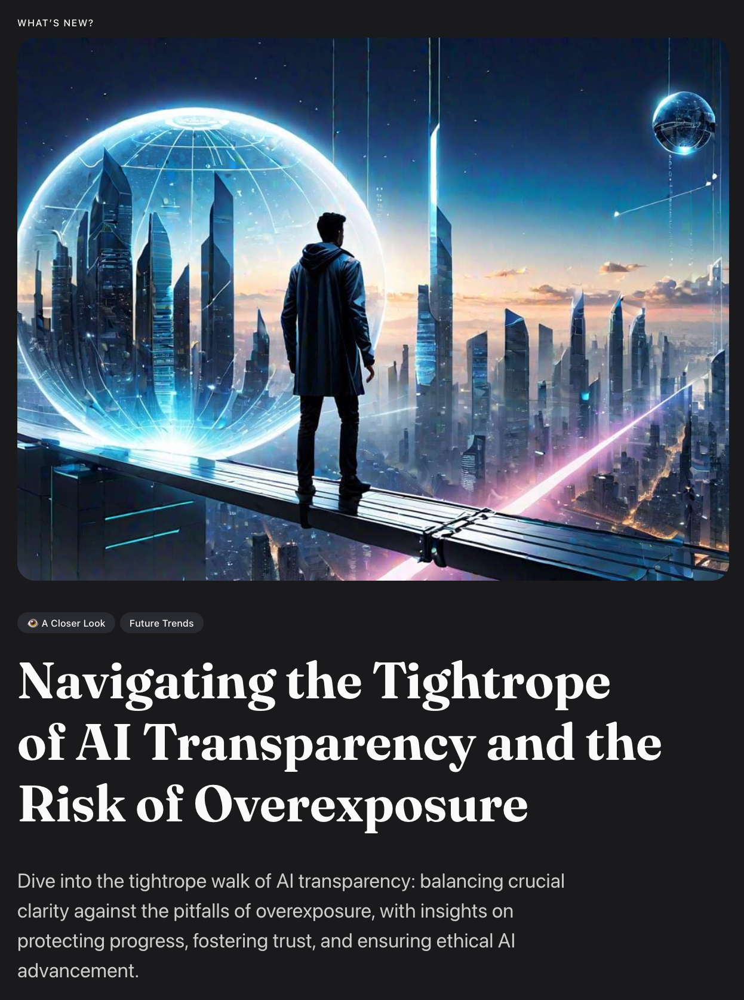
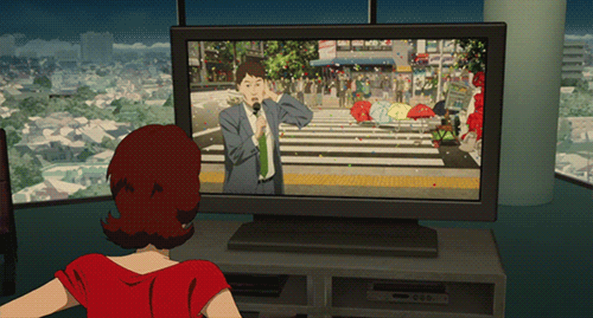

:: Now begins a story...
May I present to you, a finely curated section of a fine collection of the wonderful web we weave with a weekly roundup of bits and pieces from the far corners of the super information highway that I like to call — Token Wisdom ✨


The more control you have over your attention, the more control you have over your future.

A curated wisdom of consumed knowledge and token allocation.
↳ February 25th 🧿 March 2nd, 2024
📖 Table of Contents

Welcome to Token Wisdom!
Where we learn about tomorrow, today.
Welcome to the exhilarating latest edition of our newsletter where the frontiers of AI, spatial computing, and innovation blend seamlessly. Embark on an intellectual odyssey as we delve into Adobe Research's Project Music GenAI Control and its transformative impact on music composition, and explore the intriguing realm of hacking culture that aims to reshape our digital landscape.
Discover the revolutionary field of Spatial Computing, where AI converges with mixed reality to redefine how we interact with our world, and examine the game-changing development in auto manufacturing, as we chart Hyundai Motor Group's ascension and Apple's complex journey with the much-anticipated Apple Car.
As we navigate the intersections of technological growth and ethical considerations, prepare to probe the delicate balance between copyright infringement and the frontiers of generative AI creativity. Be inspired by historical insights and the sharp wisdom of visionaries like Nipsey Hussle, while uncovering the technological narratives that shape our present and future.
And in A Closer Look section, explore the precarious balance of AI transparency—unlock the secrets of ethical artificial intelligence and its impact on our future in this thought-provoking feature.
So strap in for a concise yet broad coverage that sweeps across the very edges of innovation to the core issues shaping our human experience in the digital age. Here, we can dive into the conversation, be informed by the diversity of stories, and stay at the cusp of technology's transformative wave. ✨
🎖️ A highly curated collection of humanly consumed knowledge.
✨ The Relaunch of Token Wisdom
Keeping up in this new generative mega-multi-meta-DAO-verse makes it hard to quantum all that spatial neural netting. You down with GPT? Ya, you know me. That's why I package up a small part of the internet that catches my eye, percolates my thoughts, stirs my mind, and share it with you from time to time.

🎉 Newest / Latest
100% Human Curated and Consumed Content
Unleash the power of technology and imagination as we explore the transformative potential of Spatial Computing, the rise and fall of the Apple Car, the blurred boundaries of copyright in the age of generative AI, and the captivating intersection of magic and technology in this edition of our newsletter.
#AppleVisionPro: The potential impact of Apple's new mixed-reality headset on our brains and daily lives raises concerns and excitement.
#PegasusSpyware: A major legal victory orders NSO Group, maker of Pegasus spyware, to hand over its code to WhatsApp, highlighting the importance of protecting user privacy.
#Photoroom: A French startup's success, driven by a viral Barbie selfie generator, showcases the power of memes and AI in content creation.
#GeminiChatGPT: An exploration of the unexpected outcomes and challenges posed by AI bots, such as Google Gemini and ChatGPT, in meeting user expectations.
#AlterEgo: A mind-reading device called AlterEgo allows users to search the internet and communicate with machines using their thoughts.
#MagicTechnology: Examining the historical and cultural connections between magic, technology, and our perception of reality in the age of AI and hyperreality.
#AppleCar: The rise and fall of Apple's ambitious car project, Project Titan, and the challenges faced in reshaping the automotive industry.
#GenerativeAI: The clash between copyright and AI innovation as generative AI technology challenges traditional notions of creativity and fair use.
#AIandCreativity: The rise of generative AI technology challenges the concept of copyright, potentially reshaping the creative landscape and raising questions about the boundaries of authorship and intellectual property rights.

The Full Breakdown - Top 10 of the Week
100% Human Curated Collection of Content

👁️ A Closer Look
Attempts to explore a subject and share my thoughts.


A Closer Look: Explorations in Technology
Weekly essay in the areas of blockchain, artificial intelligence, extended reality, quantum computing, and all the bits and pieces.



📺 Time Well Spent
Top Ten of the Time I Spend
Exploring groundbreaking AI projects, the hacker culture, the commercial real estate crisis, and the transformative journeys of industry leaders and artists, this edition takes you on a captivating journey through the realms of innovation, technology, and human wisdom.
#HackersUnleashed: Exploring the hacker culture and their mission to improve the world through innovation and challenge oppressive systems.
#PropertyCrisis: The commercial real estate sector faces insolvency and steep price declines, posing a potential global property crisis.
#GenerativeAIRevolution: DeepMind's groundbreaking AI technology creates fully playable video games from scratch, transforming the game development process.
#HyundaiInnovation: Hyundai Motor Group's transformation from copycat to innovation leader in the automotive industry, revolutionizing manufacturing and investing in robotics and autonomous driving.
#MasteringYourEnergy: Insights from Nipsey Hussle on persistence, authenticity, and the power of mastering one's energy for personal growth and success.
#HackerManipulation: Kevin Mitnick, the greatest hacker, mastered the art of manipulation, exposing vulnerabilities in both technology and human nature.
#RealTimeInternet: DeepMind's AI system generates fully playable video games from text inputs, automating game development and revolutionizing the gaming industry.
#AIRevolution: Unveiling the power of AI in co-creating music, challenging the status quo, addressing commercial real estate challenges, and transforming game development and everyday life.
If you watch these ten videos, statistics have proven your IQ will go up, like, 2 points or something like that. I saw it on Perplexity.*

For a Full Breakdown of Time Well Spent
A weekly top ten list of YouTube videos that caught my attention.

✨Token Wisdom
Knowledge Transmuted
As we wrap up this enlightening journey across the diverse terrain of technological innovation, we find ourselves standing at the crossroads of unparalleled potential and profound responsibility. The marvels of AI, spatial computing, and generative technology offer us a canvas vast with opportunity, yet it is imperative to wield the brush with cautious wisdom.
The excitement of pushing boundaries is tempered by the sobering thought that our reach should not exceed our ethical grasp. It's in the balance between pioneering breakthroughs and the defense of individual dignity that true progress lies. The technologies we’ve explored—spanning from Generative AI's symphonic blends to the valor of hidden figures reshaping the techscape—are less about the code and hardware, and more about the human spirit they represent.
Poised at the brink of a new era where innovation intersects with our deepest values, we must remember that the bravest frontier is not the technology we create, but the humanity with which we steward it. In pondering the sagacious words of the past, we are called to not only chart but also to illuminate the path ahead with considerate steps:
To have knowledge is not enough; we must apply wisdom to our actions.
Let's commit to exploring the ever-evolving world of technology with a strong focus on ethics and improving our community. Our collective future hinges on our resolve to nurture a symbiosis where technology meets tenacity—the kind that echoes throughout Nipsey Hussle’s life lessons—and progresses in stride with our empathy and integrity.
Until we meet again in the next edition, maintain your curiosity, stay enlightened, and continue to venture boldly yet thoughtfully into the captivating universe of technological wonder. Let our shared voyage be marked by a commitment to innovations that magnify our human experience, looking forever forward with the wisdom gained from every step taken.
🧨

🌈💫 The Less You Know
The More You Learn
Latest Technologies
- Spatial Computing: An evolving field of technology that combines AI, computer vision, mixed reality, and other cutting-edge technologies to seamlessly blend virtual experiences with the physical world.
- Mixed-Reality Headsets: Devices that offer improved graphics and a wider field of view compared to traditional virtual reality (VR) and augmented reality (AR) devices.
- AI Photo Editor: AI-powered software that allows users to edit and enhance photos using artificial intelligence algorithms.
- Mind-Reading Device: A wearable headset that enables users to communicate with machines using their thoughts.
- Generative AI: Refers to the use of artificial intelligence algorithms to generate new content, such as images, music, or text, based on existing data or user prompts.
- Immersive Interfaces: Interfaces that create a sense of immersion and presence, often achieved through technologies like virtual reality (VR) or augmented reality (AR).
- Deep Learning: A subset of machine learning that uses artificial neural networks to analyze and learn from large amounts of data, enabling the AI system to make predictions or decisions.
- Robotics: The field of technology and engineering that involves the design, development, and operation of robots, which are machines capable of performing tasks autonomously or with human assistance.
- Real-Time Internet: A concept where software experiences are personalized and created on the fly based on user prompts, allowing for dynamic and tailored interactions.
Most Significant Topics:
- Spatial Computing: Its foundational concepts, potential applications, and impact on businesses and society.
- Privacy and Surveillance: The legal implications and concerns surrounding the use of spyware and surveillance technology.
- Memes and AI: The viral potential of memes and the transformative impact of AI technology in content creation.
- Human-Computer Interaction: The evolution of interaction between humans and computers, particularly in the context of AI and mixed-reality technology.
- Copyright and AI: The challenges and legal implications of using copyrighted material to train AI models, and the potential redefinition of creativity and fair use.
- Music GenAI Control: Adobe Research's project that utilizes Generative AI to co-create music with precise control, revolutionizing the music composition process.
- Hacker Culture: The community and ethos surrounding hackers, who challenge the status quo and aim to improve various aspects of the world through their skills and knowledge.
- Commercial Real Estate Crisis: The potential crisis in the commercial real estate sector due to excessive supply, declining property values, and mounting debt, which could have significant economic repercussions.
- AI in Gaming: DeepMind's AI technology that generates fully playable video games from scratch, automating the game development process and offering new possibilities for the gaming industry.
- Wisdom of Nipsey Hussle: Insights and lessons from the late rapper and entrepreneur Nipsey Hussle, focusing on persistence, authenticity, and mastering one's energy.
Important Acronyms & Technical Terms
- AI: Artificial Intelligence
- AR: Augmented Reality
- VR: Virtual Reality
- EVs: Electric Vehicles
- Machine Learning: A branch of AI that enables systems to learn and improve from experience without being explicitly programmed.
- Counterculture Movements: Social and cultural movements that emerge in opposition to prevailing norms and values.
- Social Engineering: The use of psychological manipulation to deceive individuals into divulging sensitive information or performing actions that may compromise security.
- Parallax Effect: The apparent displacement or difference in the position of an object when viewed from different angles, often used in creating depth and perspective in visual media.
- Spatial Interfaces: Interfaces that enable users to interact with technology and the physical world in a spatial context.
- Pass-Through Technology: Technology that seamlessly blends the real world with a virtual one, allowing users to perceive and interact with both simultaneously.
- Hyperreality: A state in which the boundary between the physical world and the virtual world becomes blurred, often experienced through immersive technologies.
- Fair Use: A legal doctrine that allows limited use of copyrighted material without permission from the copyright holder, typically for purposes such as criticism, commentary, or education.
Each of these topics represents a facet of the rapidly evolving technological landscape, offering both opportunities for advancement and challenges that need careful consideration.

Thank you for cruising by the Cult of Innovation
We’re making some Stone Soup here and if you enjoyed this amuse-bouche of news compilations in bite-sized morsels, please share with your friends and help feed a community. Mmmm. #nomnom.